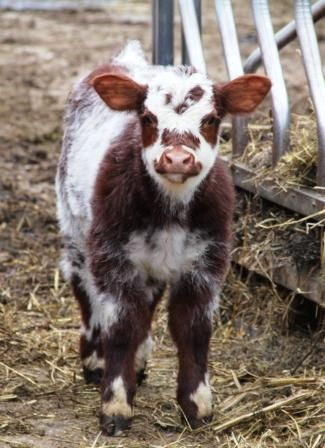
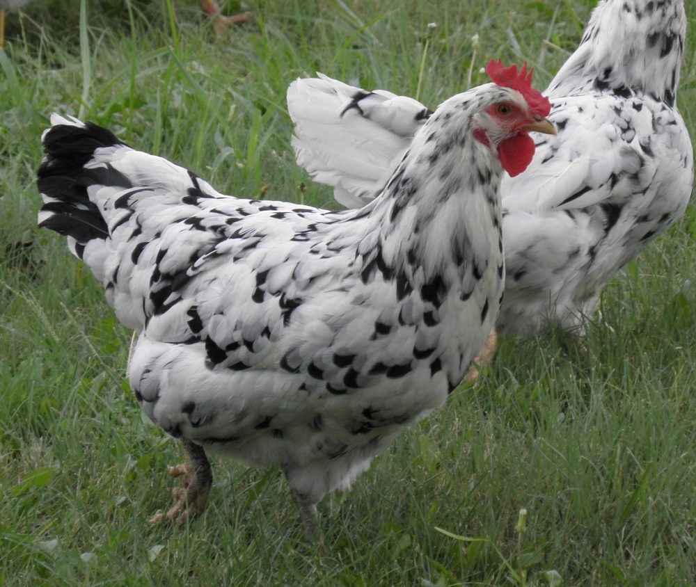
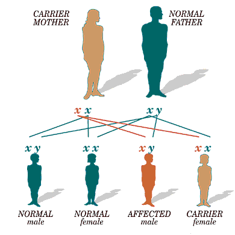
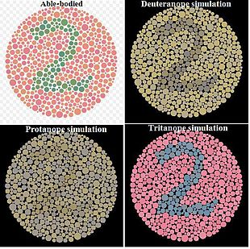

5.5 Beyond Mendel
Mendel picked his traits carefully. He needed characteristics with exactly two clean versions, controlled by one gene, on a non-sex chromosome, with one allele fully masking the other. Most traits are not like that — including almost every one you care about in yourself.
What actually breaks
It is worth being precise here, because the phrase "exceptions to Mendel's rules" makes it sound as though the whole system fails. It does not. Segregation still happens. Gametes still combine at random. The Punnett square still works.
What changes is one specific step: how a genotype is read into a phenotype. Five situations do this differently:
| Pattern | What is different |
|---|---|
| Incomplete dominance | The heterozygote is a blend — neither allele dominates |
| Codominance | The heterozygote shows both alleles fully, side by side |
| Multiple alleles | More than two versions exist in the population |
| Sex linkage | The gene is on a sex chromosome, so males and females differ |
| Polygenic inheritance | Many genes contribute to one trait |
Keep hold of this as you read: in the first four, the square is unchanged. Only the reading of the boxes changes. That is why one interactive can handle all of them.
Incomplete dominance — the blend
In snapdragons, a red-flowered plant crossed with a white-flowered plant gives offspring that are pink. Neither allele masks the other, so the heterozygote lands somewhere in between.
Why does blending happen at the molecular level? Because one working copy of the pigment gene makes only half the usual amount of red pigment — and half the pigment looks pink. Compare that with the pea flowers in 5.4, where half the enzyme was still plenty.
Because every genotype now looks different, the genotype and phenotype ratios become identical. Two pink parents give 1 red : 2 pink : 1 white, not 3 : 1.
Familial hypercholesterolaemia works this way in humans. People with two working copies of the cholesterol-receptor gene have normal cholesterol; people with one have roughly double; people with none have around six times normal and may have heart attacks in childhood. The heterozygote sits genuinely in between.
Codominance — both, at full strength
Cross a red cow with a white cow and the calf is roan. That sounds like pink until you look closely: a roan coat is not a pale red. It is a mixture of individual red hairs and individual white hairs, growing side by side.

Chickens do the same thing. A black hen crossed with a white cockerel gives erminette offspring — black and white feathers together, not grey.

| Phenotype | White | Black | Erminette |
|---|---|---|---|
| Genotype | WW | BB | BW |
Incomplete dominance and codominance produce identical Punnett squares and identical 1 : 2 : 1 ratios. Students often hunt for a mathematical difference. There is none. The only way to tell them apart is to look at the heterozygote and ask: is it a mixture (pink) or a mosaic (roan)?
Sickle cell is the human example, and it is subtler than it looks. A carrier makes both normal haemoglobin and sickle haemoglobin — both alleles are expressed, so at the molecular level it is codominant. But because the normal haemoglobin is enough for everyday life, the carrier appears healthy, so at the whole-body level the trait looks recessive. Which answer is right depends on which level you are asked about.
Multiple alleles — more than two versions
An individual always has exactly two alleles for a gene, one on each chromosome of the pair. But the population can hold more than two versions. Human blood group is the standard case, with three: IA, IB and i.
IA and IB are codominant with each other. Both are dominant over i.
| Blood group (phenotype) | Possible genotypes | Marker on the red blood cell |
|---|---|---|
| A | IAIA or IAi | A marker only |
| B | IBIB or IBi | B marker only |
| AB | IAIB | Both markers — codominance in action |
| O | ii | Neither marker |
Group AB is the clearest visible codominance in humans: the red blood cells genuinely carry both markers, not an averaged one.
This is why blood groups can exclude a parent but rarely confirm one. Two AB parents cannot produce a type O child, because neither has an i allele to pass on. But a type A child could have come from an enormous number of couples.
Sex linkage — why it matters who inherits it
Females have two X chromosomes; males have one X and one Y. The Y is much smaller and carries far fewer genes. So for any gene that sits on the X and has no counterpart on the Y:
- A female has two copies. A recessive allele on one X can be masked by a working allele on the other. She is a carrier — unaffected, but able to pass it on.
- A male has only one copy. There is no second allele to mask anything, so whatever is on his single X is what he gets.
That asymmetry is why red-green colour blindness and haemophilia are far more common in males. A male needs only one copy of the allele; a female needs two.

A father passes his X to every daughter and his Y to every son. So a colour-blind father cannot pass colour blindness to his sons at all — they get his Y. All of his daughters, however, receive his affected X and become carriers at minimum.

"Sex-linked" does not mean "only affects one sex". Females can be colour blind — they simply need two copies of the allele rather than one, which is much less likely. Prevalence differs by roughly a factor of twenty, not by an absolute rule.
Run the crosses
Switch between the four patterns below. The Punnett engine underneath does not change between them — only the way each box is read.
Cross anything: four inheritance patterns
Interactive- Set up pink × pink, then roan × roan. Write down both squares. What is identical, and what is different?
- Find a blood-group cross that can produce all four blood types among the offspring. What must both parents be?
- Show that two type AB parents can never have a type O child, using the square rather than a rule.
- Set a carrier mother with a colour-blind father. What fraction of the daughters are colour blind? Now swap: colour-blind mother, unaffected father. Explain why the answers differ so much.
- Can a colour-blind father pass the condition to his son? Use the square to justify your answer.
Polygenic inheritance — and why you are not a pea
The final pattern is the one that covers most human traits, and it is the reason a Punnett square is no use for them.
Height, skin colour, eye colour and body shape are polygenic: many genes each contribute a small amount. If a trait is controlled by six genes with two alleles each, there are hundreds of genotypes, and the phenotypes blur into a continuous range rather than falling into categories.
That is the signature to look for. A Mendelian trait gives you categories — round or wrinkled, affected or not. A polygenic trait gives you a continuum, and when you plot it you get a bell curve: many people near the middle, few at the extremes.
That sounds like something you have to take on trust, so let us actually build one. Imagine height controlled by just three genes, where each "tall" allele adds a fixed amount of height and each "short" allele adds none. Cross two parents who are heterozygous for all three — AaBbCc × AaBbCc — and count how many tall alleles each offspring ends up with. There are 64 equally likely combinations:
| Tall alleles inherited | Out of 64 offspring | |
|---|---|---|
| 0 — shortest | 1 | |
| 1 | 6 | |
| 2 | 15 | |
| 3 — middling | 20 | |
| 4 | 15 | |
| 5 | 6 | |
| 6 — tallest | 1 |
Nobody designed that shape — it fell out of the counting. There are many ways to end up middling and only one way to inherit all six tall alleles, in the same way there are many ways to roll a seven with two dice and only one way to roll a twelve.
And that is with only three genes, which already gives seven height categories instead of two. Real height involves hundreds of genes. Add that many and the steps between categories become far too small to notice, so the staircase smooths into a continuous curve — and then the environment blurs whatever edges are left.
Ask yourself: could I sort a hundred people into two clean groups for this trait? For blood group, yes. For height, obviously not — and that difference tells you which kind of inheritance you are dealing with before you know anything about the genes involved.
Polygenic traits are also the ones most open to the environment, which is where 5.6 picks up.
Check your understanding
- A student says incomplete dominance and codominance are the same because both give 1 : 2 : 1. Say what is right about that and what is wrong.
- Two roan cattle are crossed. Predict the offspring, and explain why no calf is a pale pink.
- A woman with type O blood has a child with type B. The mother's partner has type AB. Could he be the biological father? Justify with genotypes.
- Explain why roughly 1 in 12 males but only about 1 in 200 females is red-green colour blind. Your answer must mention the Y chromosome.
- Why can a Punnett square predict blood group but not height?
- Sickle cell trait is described as codominant at the molecular level but recessive at the whole-organism level. Explain how both can be true.
Quick check
This part marks itself, and points you back to the right section if something is shaky.
In all of these patterns except polygenic inheritance, what stays exactly as Mendel described it?
What changes is one specific step: how a genotype is read into a phenotype. That is why a single Punnett engine can handle incomplete dominance, codominance, multiple alleles and sex linkage without altering how the boxes are filled in.
A single Punnett interactive can run incomplete dominance, codominance, multiple alleles and sex linkage without changing how the boxes are filled in. Why does that work?
A Punnett square is a model of meiosis and fertilisation, and neither of those is altered by any of these patterns. Polygenic inheritance is the one that genuinely defeats the tool, because the problem there is the sheer number of genes rather than how a box is read.
Pink snapdragons and roan cattle both come from a heterozygote, and both crosses give 1 : 2 : 1. How do you tell incomplete dominance from codominance?
A pink snapdragon is uniformly pink — no red patches, no white patches. A roan coat is individual red hairs and individual white hairs growing together, and erminette chickens have black feathers and white feathers with no grey anywhere. Mixture versus mosaic is the whole distinction.
A black hen crossed with a white cockerel gives erminette chicks — patches of pure black feathers and pure white feathers. What would the chicks have looked like if the trait had been incompletely dominant instead?
In codominance each allele's product is made in full, so the animal ends up a mosaic of two kinds of cell. In incomplete dominance every cell gets the same halved dose, so the whole organism shifts together. Ask what a single feather looks like and the two patterns separate immediately.
Why is a heterozygous snapdragon pink, while a heterozygous pea plant is fully purple?
The difference is a matter of dose, not of principle. Ask how much protein one working copy makes and whether that is enough — and notice that familial hypercholesterolaemia works the same way in humans, with the heterozygote sitting genuinely in between.
Why is familial hypercholesterolaemia counted as incomplete dominance rather than as a recessive condition?
The test is always the same one: does a single working copy make enough? In Mendel's peas half the enzyme was plenty, so the heterozygote was invisible. For the snapdragon's pigment and for this receptor, half is not enough — so the heterozygote gets a phenotype of its own.
A woman with blood group O has a child with group B. Her partner has group AB. Could he be the biological father?
The mother is ii, so the child must have received i from her, which makes the child IBi. The father supplied IB, and an AB man has one to give. The useful general point is that this kind of evidence rules people out rather than in.
A newborn with blood group O is claimed by a woman with group AB, whose partner has group A. Can she be the biological mother?
Group O is the only phenotype with a single genotype, which makes it unusually informative: an O child demands an i from both parents. That is the shape of nearly every blood-group argument — it rules a person out cleanly, while never confirming anyone.
A student says red-green colour blindness only affects males. What is the accurate correction?
“Sex-linked” describes where the gene sits, not who can have the condition. The prevalence differs by roughly a factor of twenty because a male needs one copy and a female needs two — a difference of likelihood, not an absolute rule.
A woman is red-green colour blind. What must be true of her parents?
An affected female is rare because she requires two independent events, not because anything unusual happens in her. Working backwards from an affected female is a useful habit: it immediately tells you her father was affected, which is a strong claim to be able to make from one observation.
A colour-blind man has children with a woman who carries no colour-blindness allele. What happens?
Work from which chromosome each parent hands over. He gives every daughter his affected X and every son his Y. The condition therefore skips his sons entirely and travels invisibly through his daughters — and can surface again in their sons.
A colour-blind woman has children with a man who is not colour blind. What happens?
Track which chromosome each parent hands over and the answer falls out. A son's single X always comes from his mother, which is why an affected mother is far more consequential for her sons than an affected father ever is. Compare this with a carrier mother, where only half the sons are affected.
Why can a Punnett square predict blood group but not human height?
Ask yourself whether you could sort a hundred people into clean groups for the trait. For blood group, yes. For height, obviously not — and that test tells you which kind of inheritance you are dealing with before you know anything about the genes involved.
You measure the same trait in two hundred students. Which result would tell you the trait is polygenic rather than Mendelian?
You can classify a trait from its distribution alone, before knowing a single gene involved. The bell shape is not designed — it falls out of the counting, in the same way that seven is the commonest roll of two dice and twelve the rarest.